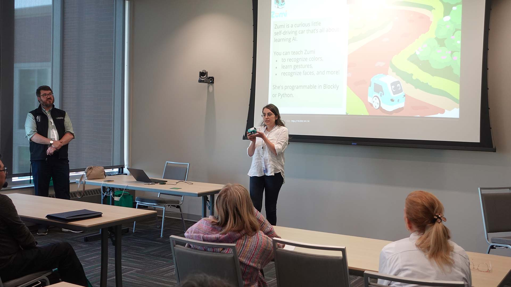

CyberAI Innovation: Expanding Workforce Pathways into Cybersecurity and AI
Brings AI and cybersecurity into career and technical education in North Dakota. I lead the project as principal investigator.
My research examines how rural teachers learn computing including AI and engineering and integrate them into their classrooms in ways that connect to their students’ communities.

Brings AI and cybersecurity into career and technical education in North Dakota. I lead the project as principal investigator.
Develops an AI-powered system that gives rural elementary teachers a report on patterns in their questioning and feedback.